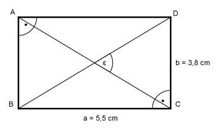
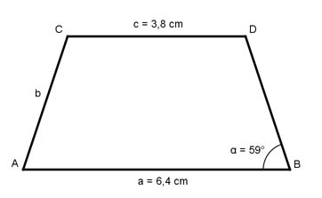
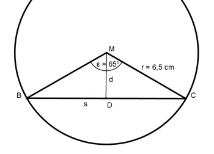
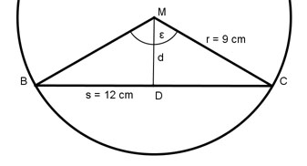
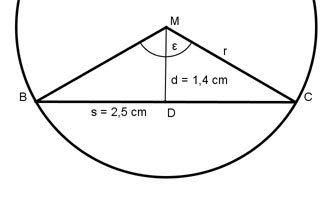
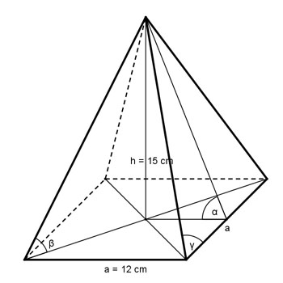
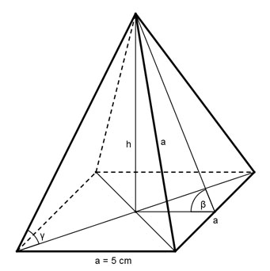

Aufgabe 13 Wie groß sind die restlichen Seiten?
Aufgabe 14 Wie groß sind AB und der Winkel α? α = °
Aufgabe 15 Wie groß sind AB und der Winkel α?
Aufgabe 16 Wie groß ist AB in dem gleichschenkligen Dreieck? AB = cm
Aufgabe 17 Ein Quadrat hat eine Seitenlänge von 5,8 cm. Wie groß ist seine Diagonale d?
Aufgabe 18 Die Seiten eines Dreiecks sind 5,4 cm, 7,2 cm und 9 cm lang. Wie groß sind seine Winkel? β = °
Aufgabe 19 Wandeln Sie um in Grad: 5° 36' 12'' 41° 38' 3''
Aufgabe 20 32,28° = 32° ' '' 4,83° = 4° ' ''
Aufgabe 21 Rechnen Sie um in das Bogenmaß: 301° 17' ; 212° 39' ; 120°.
Aufgabe 22 Wie groß sind c und b, wenn α = 36°27' und a = 29,63 cm? b = cm
Aufgabe 23 Wie groß sind a und c, wenn α = 67°38' und b = 25,42 cm?
Aufgabe 24 Wie groß sind a und b, wenn α = 48°12'15'' und c = 31,2 cm? a = cm
Aufgabe 25 Berechnen Sie die Fläche A des gleichschenkligen Dreiecks.
Aufgabe 26 Berechnen Sie die Fläche A des regelmäßigen Neunecks. A = mm²
Aufgabe 27 Ein regelmäßiges 36-Eck hat eine Fläche von 7875 cm². Wie groß ist der Radius r seines Umkreises?
Aufgabe 28 Berechnen Sie p, wenn r = 20 m und α = 20°.
p = m
Aufgabe 29 Berechnen Sie p. wenn r = 20 m und s = 15 m.
Aufgabe 30 Berechnen Sie p, wenn r = 20 m und b = 40 m.
Aufgabe 31 Um wie viel cm ist der Bogen b länger als die Sehne s?
Aufgabe 32 Wie groß ist das schraffierte Kreissegment A? A = m²
Aufgabe 33 Wie groß sind der Inkreisradius ri und der Umkreisradius ru des gleichschenkligen Dreiecks?
Aufgabe 34 Berechnen Sie a, b und c. b = cm
Aufgabe 35 Berechnen Sie a, b und c.
Aufgabe 36 Berechnen Sie a, b und c. a = cm
Aufgabe 37 Berechnen Sie β, b und c.
Aufgabe 38 Berechnen Sie α, a und b. b = cm
Aufgabe 39 Berechnen Sie α, a und c.
Aufgabe 40 Wie groß ist α in dem gleichschenkligen Dreieck? α = °
Aufgabe 41 Berechnen Sie den Schnittwinkel ε der beiden Diagonalen. 
Aufgabe 42 Berechnen Sie den Schnittwinkel ε der beiden Diagonalen. ε = °
Aufgabe 43 Wie groß sind die Seiten a und b des Rechtecks?

Aufgabe 44 Wie groß sind die Seiten a und b des Rechtecks? a = cm
Aufgabe 45 Wie groß sind die Seiten a und b des Rechtecks?
Aufgabe 46 Wie groß sind die Diagonalen e und f der Raute? e = cm
Aufgabe 47 Wie groß ist die Diagonale e der Raute?
Aufgabe 48 Wie groß ist die Diagonale e der Raute? e = cm
Aufgabe 49 Wie groß sind die Diagonale f und die Seite a der Raute?
Aufgabe 50 Wie groß ist die Seite a der Raute? a = cm
Aufgabe 51 Wie groß ist die Diagonale f der Raute?
Aufgabe 52 Wie groß sind die Diagonalen e, f und der Winkel β des Drachens? β = °
Aufgabe 53 Berechnen Sie die Länge der Seite b des gleichschenkligen Trapezes. 
Aufgabe 54 Wie groß sind die Länge s der Sehne und deren Abstand d vom Mittelpunkt.  s = cm
Aufgabe 55 Wie groß sind der Mittelpunktswinkel ε und der Abstand d der Sehne s vom Mittelpunkt? 
Aufgabe 56 Wie groß sind der Mittelpunktswinkel ε und der Radius r?  ε = °
Aufgabe 57 Wie groß sind die Winkel α und β in dem Würfel?

Aufgabe 58 Wie groß sind die Winkel α, β und γ?  γ = °
Aufgabe 59 Wie groß sind s und α?
Aufgabe 60 Wie groß sind s und γ? γ = °
Aufgabe 61 Wie groß sind von einer regelmäßigen sechsseitigen Pyramide mit einer Grundseite a von 14 cm und einer Höhe h von 24 cm der Neigungswinkel α der Seitenflächen, der Neigungswinkel β der Seitenkanten gegen die Grundfläche und der Winkel γ an der Spitze eines Manteldreiecks?
Aufgabe 62 Wie groß sind h, β und γ?  h = cm
Aufgabe 63 Wie groß ist der Winkel γ zwischen den an den Kreis gelegten Tangenten?
zurück